전자기기기능장 (2014-04-06 기출문제)
1과목: 임의구분
1. 다음 중 지구 주위의 궤도를 선회하는 인공위성을 이용하여 마이크로웨이브 통신의 중계 역할을 하며 전화 및 TV방송 신호 등의 통신에 사용되는 방식을 무엇이라 하는가?
- FS 통신
- 다중 통신
- 데이터 통신
- 위성 통신
(정답률: 92%)

2. 어떤 회로의 피상전력이 20[kVA], 유효전력이 12[kW]일 때 이 회로의 무효율은?
- 0.1
- 0.8
- 0.6
- 0.2
(정답률: 80%)
3. 다음 논리식을 만족하는 논리회로는?
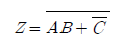
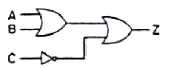
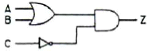
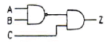
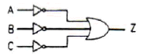
(정답률: 73%)
4. 다음 그림과 같은 회로에서 AB 단자에 v=Vm sinωt[V]를 공급했을 때, AC 양단의 전압은?
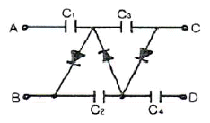
- 2Vm
- 3Vm
- 4Vm
- 5Vm
(정답률: 82%)
5. 어떤 전력증폭기의 직류공급 전압이 10[V], 400[mA]일 때 부하에서 출력전력이 2.8[W]이었다면 증폭기의 효율은 몇 [%]인가?
- 54[%]
- 62[%]
- 70[%]
- 80[%]
(정답률: 64%)
6. CAD에서 도면을 작성할 때 3가지 도면으로 구분한다. 다음 중 3가지 도면에 속하지 않는 것은?
- 단일 도면
- 평면 도면
- 계층 도면
- 스케치 도면
(정답률: 86%)
7. 정(正) 논리 AND 게이트와 등가인 부(負) 논리 게이트는?
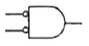
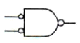
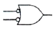
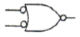
(정답률: 60%)
8. 다음 주소 지정 방식 중 속도(speed) 문제로 볼때 가장 빠른 것은?
- direct address
- indirect address
- calculated address
- immediate address
(정답률: 79%)
9. 일정 진폭 및 위상을 상호 변환하여 신호를 싣는 변조 방식은?
- QAM
- FSK
- PSK
- ASK
(정답률: 82%)
10. 펄스의 상승부분에서 진동의 정도를 말하며 높은 주파수 성분에 공진하기 때문에 생기는 것은?
- 링깅
- 새그
- 라운딩
- 오버슈트
(정답률: 88%)
11. 가청주파수 대역을 20[Hz]-20[kHz]라고 할 때 아날로그 신호를 디지털로 변환하기 위한 최저 표본화 주파수는 몇 [kHz]인가?
- 10
- 20
- 40
- 80
(정답률: 85%)
12. R-L-C 공진 회로에 대한 설명 중 옳은 것은?
- 병렬공진시에 최대의 전류가 흐른다.
- 직렬공진시에 전압확대비 Q=R/wL이다.
- 직렬공진시 임피던스는 최소가 된다.
- 직렬공진시 전류는 전압보다 위상이 늦다.
(정답률: 85%)
13. 다음 그림과 같은 회로의 전달함수는?
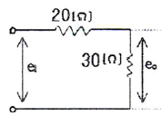
- 0.4
- 0.5
- 0.6
- 0.7
(정답률: 73%)
14. 다음 중 무선수신기에서 발생하는 잡음이 외부 잡음인지 내부 잡음인지 판정하는 방법으로 가장 적합한 것은?
- 안테나를 떼어 본다.
- 어스선을 뽑아 본다.
- 국부발진 트랜지스터를 떼어 본다.
- 고주파 증폭 트랜지스터를 떼어 본다.
(정답률: 86%)
15. 고주파 자계 중에 놓인 도체에 생기는 와전류손(渦電流損)에 의한 발열 방식은?
- 초음파가열
- 유전가열
- 유도가열
- 저항가열
(정답률: 86%)
16. 인터럽트 처리에서 I/O 장치들의 우선순위를 지정하는 이유는?
- 인터럽트 발생 빈도를 확인하기 위하여
- 인터럽트 처리 루틴의 주소를 알기 위하여
- CPU가 하나 이상의 인터럽트 처리를 처리하지 못하게 하기 위하여
- 여러 개의 인터럽트 요구들이 동시에 들어올 때 그들 중 하나를 택하기 위하여
(정답률: 87%)
17. T-Flip Flop의 명칭에 대한 설명으로 옳은 것은?
- Time의 T를 사용한 T-FF 이다.
- Transistor의 T를 사용한 T-FF 이다.
- Toggle의 T를 사용한 T-FF 이다.
- Tuning의 T를 사용한 T-FF 이다.
(정답률: 91%)
18. 가동코일형 다이내믹 마이크로폰의 구성요소가 아닌 것은?
- 진동판
- 영구자석
- 고정전극
- 보이스 코일
(정답률: 80%)
19. 생체전기신호 계측에 관한 사항에 대하여 서로 짝이 잘못 이루어진 것은?
- 근전도 - ENG(Electronystagmogram)
- 심전도 - ECG(Electrocardiogram)
- 뇌전도 - EEG(Electroencephalogram)
- 망막전도 - ERG(Electroretinogram)
(정답률: 75%)
20. 테이프 리코더에서 평탄한 주파수 특성을 얻기 위해 녹음시 EQ 회로에서 보상하는 주파수는?
- 저역 주파수
- 고역 주파수
- 중역 주파수
- 저역 및 고역 주파수
(정답률: 72%)
2과목: 임의구분
21. 입ㆍ출력 제어 방식에 관한 설명 중 옳지 않은 것은?
- 입ㆍ출력장치와 기억장치사이에 전송되는 데이터 전송량은 같다.
- 블록(block) 단위 전송방식을 DMA 및 채널 제어 방식이라 한다.
- 문자(character) 단위로 전송되는 제어방식을 직접 제어 방식이라 한다.
- CPU가 직접제어 하는 방식인 직접 제어방식에는 프로그램에 의한 입ㆍ출력 제어와 외부의 입ㆍ출력장치가 입ㆍ출력을 요구할 때마다 동작하는 인터럽트 제어방식이 있다.
(정답률: 50%)
22. 다음 그림과 같은 유도결합 회로를 T형 등가 회로로 바꾸면 어느 회로로 되는가?
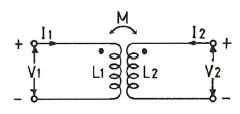
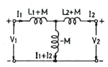
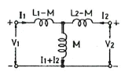
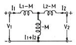
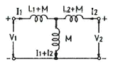
(정답률: 77%)
23. 인가 전압에 따라 용량이 변화하는 성질을 갖는 반도체는?
- 쇼트키 다이오드
- 포토 다이오드
- 터널 다이오드
- 바랙터 다이오드
(정답률: 92%)
24. 초음파 가공에서 사용되는 연마가루에 적합하지 못한 것은?
- 산화 철분
- 산화 규소
- 산화 알루미늄
- 탄화 붕소
(정답률: 78%)
25. 잡음지수 8[dB]이고, 이득 10[dB]인 증폭기에 잡음지수 11[dB], 이득 10[dB]인 증폭기를 직렬로 했을 때의 종합잡음지수는?
- 1.9[dB]
- 8[dB]
- 9[dB]
- 19[dB]
(정답률: 81%)
26. 전송제어 절차 5단계에서 전용회선을 사용할 경우 생략되는 것은?
- 정보의 전송
- 데이터 링크의 확립
- 데이터 링크의 해제
- 일반 교환망에서의 회선 접속
(정답률: 83%)
27. 다음 중 결정 고체 레이저에 속하는 것은?
- 루비 레이저
- 유리질 레이저
- 플라스틱 레이저
- 이산화탄소 레이저
(정답률: 78%)
28. 다음 계기 중 주파수를 측정할 수 없는 것은?
- 오실로스코프
- 주파수 카운터
- 그리드 딥 미터
- VTVM(Vacuum-Tube VoltMeter)
(정답률: 88%)
29. 다음 스피커 중 능률이 높고 지향성 및 방사특성이 우수한 것은?
- 혼형
- 돔형
- 콘형
- 콘덴서형
(정답률: 79%)
30. 입력 전압이 기준 레벨 이상에 달하면 출력 전압이 일정한 값으로 유지되는 회로는?
- 클리퍼 회로
- 리미터 회로
- 슬라이스 회로
- 클램프 회로
(정답률: 73%)
31. 전동기를 미리 정하여진 시간적 배열에 따라 운전하는 경우는(예를 들면 엘리베이터의 속도제어) 어떤 제어인가?
- 추종제어
- 비율제어
- 프로그램제어
- 정치제어
(정답률: 78%)
32. 자동제어에서 인디셜 응답을 조사할 때 입력에 어떤 파형을 가하는가?
- 스텝파
- 펄스파
- 사인파
- 톱니파
(정답률: 83%)
33. 다음 중 정현파의 파형률은?
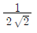
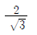
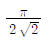
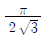
(정답률: 74%)
34. 다음 회로는 몇 진 카운터인가?
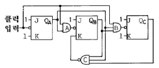
- 5진
- 6진
- 7진
- 8진
(정답률: 81%)
35. 다음은 무슨 회로인가? (단, CR 시정수가 입력 펄스폭보다 작다.)
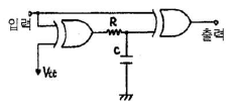
- 시미트 트리거 회로
- 감산기 회로
- 단안정 발진회로
- 주파수 체배회로
(정답률: 76%)
36. 제어용 증폭기의 필요 특성으로 적합하지 않은 것은?
- 이득이 클 것
- 정궤환을 많이 걸 수 있을 것
- 사용조건의 변화에 대하여 안정성이 있을 것
- 신호에 포함된 주파수 성분 범위까지 주파수 특성이 좋을 것
(정답률: 84%)
37. 어떤 명령이 실행되기 위해서 가장 먼저 이루어지는 마이크로 오퍼레이션은?
- MBR ← PC
- PC ← PC+1
- IR ← MBR
- MAR ← PC
(정답률: 90%)
38. 어떤 회로에서 신호파의 최고주파수가 4[kHz]일 때 PCM 변조방식에서 샘플링주기는?
- 0.125[ms]
- 0.5[ms]
- 1.125[ms]
- 1.5[ms]
(정답률: 72%)
39. 신호파의 진폭을 양자화하고, 양자화된 숫자를 2진법으로 표시하여 2진 부호에 따른 펄스를 발사하는 변조 방식은?
- PAM
- PTM
- PCM
- PWM
(정답률: 80%)
40. 프로토콜의 구성 요소에 속하지 않는 것은?
- 구문
- 프레임
- 타이밍
- 의미
(정답률: 76%)
3과목: 임의구분
41. 저항 30[Ω]과 유도리액턴스 40[Ω]을 병렬로 접속하고, 120[V]의 교류 전압을 가할 때 전 전류는 몇 [A]인가?
- 3[A]
- 4[A]
- 5[A]
- 7[A]
(정답률: 71%)
42. AM 수신기의 감도를 높이기 위하여 고주파 증폭을 크게하면 발진이 일어난다. 발진을 방지하기 위한 방법은?
- 저주파 증폭을 크게 한다.
- 저주파 증폭을 작게 한다.
- 수신 주파수를 영상 주파수로 바꾸어 증폭한다.
- 수신 주파수를 중간 주파수로 바꾸어 증폭한다.
(정답률: 82%)
43. 최근에 활용되고 있는 CDP(컴팩트 디스크 플레이어)에서는 아날로그 신호를 디지털 신호로 변환하기 위해 PCM 방식을 적용하는데 아날로그 신호를 디지털 신호로 변환하는 PCM의 과정을 순서대로 나열한 것은?
- 저역필터→양자화→표본화→부호화
- 저역필터→표본화→양자화→부호화
- 표본화→부호화→양자화→저역필터
- 표본화→저역필터→부호화→양자화
(정답률: 86%)
44. 10진수 (28)10을 8자리(Bit)의 2진수로 변환하되 2의 보수법으로 표시하면?
- 00011100
- 11100010
- 11100011
- 11100100
(정답률: 82%)
45. 전원공급 전압이 +40[V], 부하저항 8[Ω]일 때 이상적인 A급 SEPP 파워 앰프의 출력은?
- 10[W]
- 15[W]
- 25[W]
- 50[W]
(정답률: 68%)
46. 마이크로컴퓨터에서 정보를 전송하는 선(線)은?
- 어드레스 버스
- 데이터 버스
- 제어 버스
- 인터럽트
(정답률: 85%)
47. 대칭 4단자망에서 영상 임피던스는?
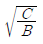
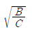
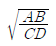
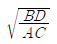
(정답률: 75%)
48. 다음과 같은 회로에서 계전기의 동작전류가 10[mA]일 때 t=0에서 스위치를 닫은 후 대략 몇 초 후에 계전기가 동작하겠는가? (단, log 2=0.301, log 3=0.477, log 5=0.699, log e=0.43이다.)
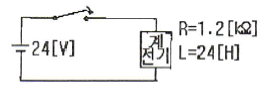
- 0.014
- 0.028
- 0.14
- 0.28
(정답률: 72%)
49. 다음 논리식을 간략화 하면?
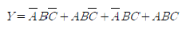
- Y = A
- Y = B
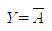
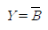
(정답률: 77%)
50. 입ㆍ출력장치와 주기억장치를 연결하는 중개 역할을 하는 것은?
- Bus
- Buffer
- Channel
- Device
(정답률: 82%)
51. 특성 방정식이 s4+2s3+s2+4s+2=0으로 주어지는 계를 훌비쯔 방법으로 안정도를 판별하면?
- 안정
- 불안정
- 임계 안정
- 조건부 안정
(정답률: 64%)
52. 다음 중 진동 억제 시에 가장 효과적인 제어 동작은?
- 비례 동작
- 적분 동작
- 미분 동작
- ON-OFF 동작
(정답률: 62%)
53. 프로그래머에서 주기억 장치의 실제 용량보다 훨씬 더 큰 기억공간을 제공하고 운영체제에 의하여 관리되는 기억장치 시스템은?
- 가상기억장치(virtual memory)
- 캐시기억장치(cache memory)
- 모듈러기억장치(modular memory)
- 연관기억장치(associative memory)
(정답률: 88%)
54. 전원과 부하가 모두 △결선된 평형 회로에서 선간 전압이 400[V], 부하 1상의 임피던스가 4+j3[Ω]인 경우 선전류는?
- 80[A]
- 80√3[A]
- 80/√3[A]
- 80/3[A]
(정답률: 74%)
55. 다음 중 두 관리도가 모두 포아송 분포를 따르는 것은?
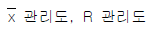
- c 관리도, u 관리도
- np 관리도, p 관리도
- c 관리도, p 관리도
(정답률: 69%)
56. 다음 [표]를 참조하여 5개월 단순이동평균법으로 7월의 수요를 예측하면 몇 개인가?
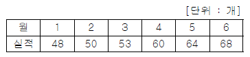
- 55개
- 57개
- 58개
- 59개
(정답률: 68%)
57. 다음 중 반즈(Ralph M. Barnes)가 제시한 동작경제원칙에 해당되지 않는 것은?
- 표준작업의 원칙
- 신체의 사용에 관한 원칙
- 작업장의 배치에 관한 원칙
- 공구 및 설비의 디자인에 관한 원칙
(정답률: 70%)
58. 근래 인간공학이 여러 분야에서 크게 기여하고 있다. 다음 중 어느 단계에서 인간공학적 지식이 고려됨으로서 기업에 가장 큰 이익을 줄 수 있는가?
- 제품의 개발단계
- 제품의 구매단계
- 제품의 사용단계
- 작업자의 채용단계
(정답률: 86%)
59. 도수분포표에서 도수가 최대인 계급의 대푯값을 정확히 표현한 통계량은?
- 중위수
- 시료평균
- 최빈수
- 미드-레인지(Mid-range)
(정답률: 80%)
60. 전수검사와 샘플링검사에 관한 설명으로 가장 올바른 것은?
- 파괴검사의 경우에는 전수검사를 적용한다.
- 전수검사가 일반적으로 샘플링검사보다 품질향상에 자극을 더 준다.
- 검사항목이 많을 경우 전수검사보다 샘플링검사가 유리하다.
- 샘플링검사는 부적합품이 섞여 들어가서는 안되는 경우에 적용한다.
(정답률: 84%)